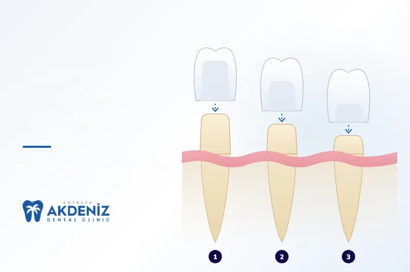

How Many Times Can a Crown Be Replaced?It depends on how much healthy tooth is left underneath.There’s no fixed number of times a crown can be replaced.
What decides it is the tooth underneath: how much healthy structure is left, how strong the root is, and whether the nerve has been through too much already. Some teeth take a new crown three or four times over a lifetime and carry on happily. Others can’t support another crown after the second one.
When a patient asks how many more crowns a tooth can take, a dentist’s honest answer is: it depends on what’s left. An X-ray, a close look at the margins (the edge where crown meets tooth), and a check of the bite tell the dentist far more than any rule of thumb ever could.
What Limits How Many Times a Crown Can Be Replaced?
Loss of Tooth Structure With Every Replacement
An old crown almost never just pops off in one piece. Your dentist cuts it off, cleans out any decay hiding under it, and then reshapes what’s left so the new crown fits snugly.
Each of those steps takes a little tooth with it. Not much, maybe a fraction of a millimetre here and there, but enamel and dentine don’t grow back. Do that three, four, five times and the stump gets shorter, thinner and weaker.
So with every replacement, the dentist’s priority is to preserve as much natural tooth as possible.
Repeated Crown Work and the Risk to the Nerve
Every time a tooth gets prepared for a crown, the nerve inside (the pulp) feels it: heat from drilling, the irritation of being worked on, the slow creep of decay at an old margin. One round is usually fine. Several rounds over the years? The odds of that nerve giving up go up, and you end up needing a root canal.
And once a tooth has had a root canal, it gets more brittle. Which is exactly why the crown on top matters so much. One study in the Journal of Prosthetic Dentistry (2025) looked back at 28 years of records from a dental clinic, focusing on root-canal-treated teeth that had needed repeated retreatment: teeth with crowns lasted longer before extraction than teeth without them, and needed far fewer procedures along the way (about 4 versus about 7).
In short, crowns protect heavily treated teeth, but each replacement comes at a cost to the tooth.
What Is the Average Lifespan of a Crown?
A typical crown gives you somewhere between 10 and 15 years of service. Plenty go well beyond that.
Zirconia Crowns
Zirconia is the strongest crown material dentists commonly use. Zirconia handles heavy chewing forces really well, which makes it the go-to for back teeth and for people who grind. Monolithic (solid) zirconia doesn’t have a porcelain layer that can chip, a common weak spot in older crowns. Want the full picture? Read our page on zirconium crowns.
E-max Crowns
E-max (lithium disilicate) is the material dentists usually choose when looks matter most, mainly front teeth. It lets light pass through a bit like natural enamel, so it doesn’t look flat or chalky. It’s strong, just not quite zirconia-strong; for a heavy grinder’s molars, zirconia often wins. More detail on our e-max page.
Porcelain Fused to Metal Crowns
PFM crowns have been used for decades. PFM crowns can last a long time, but two problems show up as the years roll by: the porcelain can chip off the metal, and as gums recede, that dark metal edge starts peeking out at the gum line. That grey line is one of the most common reasons patients ask to have their crowns redone.
What Happens to Crowns After 10 Years?
Usually, nothing sudden; crowns age through gradual wear.
The cement seal at the edge can break down a little. Gums may pull back and expose the root surface just below the crown. The surface picks up micro-scratches; porcelain may lose some shine. And if there’s a gap at the margin, bacteria get in.
Ten years isn’t an expiry date, though. Plenty of crowns at 10, 15, even 20 years still look and work fine. The point of regular check-ups is to catch the ones that don’t.
Why Do Crowns Need Replacing?
The most common reasons dentists see in practice:
- Decay at the edge (the number one reason)
- Chipped or cracked porcelain
- A crown that keeps coming loose
- Receding gums exposing a dark metal margin or the root surface
- Grinding or clenching that wears the crown down
- A bite that feels off, sometimes after other dental work nearby
- Looks: the crown no longer matches your other teeth, maybe after whitening
Can You Replace a Metal Crown With Zirconia?
Yes, and it’s one of the most common crown replacements dentists carry out.
Old PFM crowns often already have a decent amount of space prepared under them, so moving to zirconia or e-max frequently needs little or no extra drilling. You lose the grey line at the gum; you lose the metal; you gain a crown that looks a lot more like a real tooth.
Is it worth doing if the old crown doesn’t hurt? If the margin is sealed and there’s no decay, there’s no medical rush. Leakage at the edge, decay, or gums that have pulled well back? Then an early swap shields the tooth (and leaves more of it intact for the future).
When Can a Crown Not Be Replaced Again?
When there’s simply not enough tooth left to hold one. That’s the honest answer. But even when little tooth is left, there are still options to try before extraction.
Post and Core
If the tooth has had a root canal, a small post can go into the root and a core gets built up around it. That rebuilt stump then holds the new crown. It doesn’t make the tooth stronger exactly, but it gives the crown something to sit on.
When Extraction and a Dental Implant Make More Sense
Sometimes, though, saving the tooth is no longer the best choice. If the root is cracked, if decay goes too deep, or if the tooth has been through too many rounds, an extraction and a dental implant can be the more predictable long-term fix.
Can an Implant Crown Be Replaced?
Yes, and this is where implants have a real edge.
There’s no natural tooth under an implant crown, so replacing it doesn’t eat into anything. A screw-retained implant crown can simply be unscrewed, swapped and screwed back in. Cemented implant crowns take a bit more work to remove, but the implant itself stays put.
In principle, an implant crown can be replaced as many times as needed. The implant is the long-term foundation; the crown on top is the part that’s designed to be renewed.
Redoing a Crown for the Third Time: Why the Dentist’s Skill Matters
Crowning a tooth for the first time is the straightforward bit. By the third, there’s less tooth, less room for error, and often a nerve that’s already been through a lot.
This is where skill really shows. A careful dentist cuts the old crown off without nicking the tooth beneath; removes decay without taking healthy dentine “just in case”; places the new margin precisely so plaque can’t hide there. Get those details right and the new crown has a fighting chance of lasting another 15 years. If not, the crown may need replacing again within a few years.
So ask questions. How much tooth is left? What’s the plan if it’s not enough? A good dentist will happily show you the X-ray and talk you through it.
How to Make Your New Crown Last Longer
- Clean the margin, not just the crown. Tilt the bristles towards the gum line; that’s where trouble tends to begin.
- Floss or use interdental brushes daily. Crowns trap plaque between teeth just like natural ones.
- Grind at night? Wear a night guard. It’s probably the single best thing you can do for a crown’s lifespan.
- Don’t use your teeth as tools. Avoid opening bottles or packaging, or chewing ice.
- Keep your check-ups. X-rays catch margin decay long before you’d feel it.
Crown Replacement in Antalya, Turkey
Many patients come to Akdeniz Dental Clinic with crowns done years ago: the classic grey gum line, a chipped front tooth, or a crown that keeps falling out. Most want two things: a natural look, and a result that won’t need redoing in a few years.
The clinic’s approach starts with an honest assessment of every tooth. If a crown doesn’t need replacing, the dentists say so. If a tooth can’t take another crown, they say that too, and explain the options.
Why Our In-House Dental Lab Matters
Crowns at Akdeniz Dental Clinic are made in the clinic’s own lab, Akdeniz Dental Lab. That means your dentist and the technician making your crown work side by side: shade checks, fit adjustments, small tweaks to the shape. All of it happens under one roof instead of being sent back and forth to an outside lab.
For a crown replacement, where the margins are tighter and there’s less room for error, that close teamwork really counts.
Thinking about replacing an old crown? Get in touch with Akdeniz Dental Clinic and send your X-rays or photos for an assessment.
Frequently Asked Questions About Crown Replacement
Can a tooth be crowned twice?
Yes. Most crowned teeth can be crowned again, and often more than twice, as long as there’s enough healthy tooth left to support the new crown.
Does replacing a crown hurt?
Not during the procedure; local anaesthetic takes care of that. Some sensitivity for a few days afterwards is normal and usually settles on its own.
How often should crowns be replaced?
Only when there’s a reason to. There’s no set schedule; a crown that’s sealed, decay-free and comfortable can stay put. The usual lifespan sits somewhere in the 10 to 15 year range.
Is it worth replacing a crown that doesn't hurt?
Sometimes. Decay under a crown is often painless until it’s advanced, so if your dentist sees leakage or decay on an X-ray, replacing it early usually saves more of the tooth.